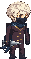
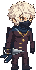
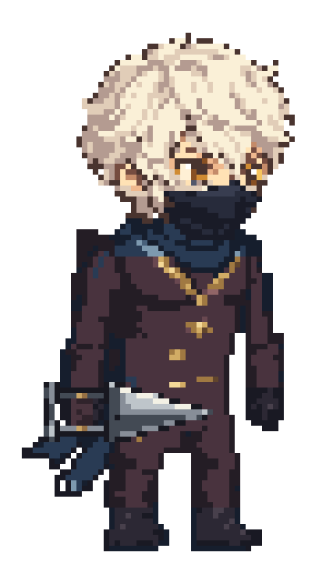

어새신 · 층 조립 대기 1장
체형 수정 컨셉입니다. 어깨 34px · 가슴 24px · 다리 19px. 머리와 카타르 원본을 재사용했습니다.
오른쪽 3/4 · 96px 기준 영역(불투명 키 95px) · 머리 38px · 왼쪽은 같은 그림을 반전합니다.

게임 59px
폰 비교 70px왼쪽 반전 59px
원화 2배 확대이전(왼쪽) / 수정(오른쪽)
몸 · 겉옷 · 머리 · 가까운 팔 · 가까운 소매/장갑 · 카타르 · 쥔 손가락 · 합성 순서입니다.
256×240 합성 PNG · 4배 PNG · 전체 캔버스 층별 4배 · 검수 기록